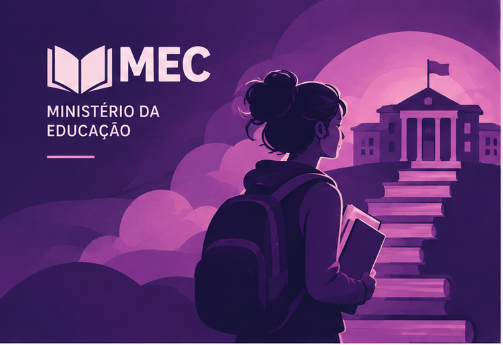

Ministério da Educação — MEC
O Ministério da Educação atua na formulação e implementação de políticas educacionais, incluindo a Educação Profissional e Tecnológica. Essa modalidade busca preparar estudantes e trabalhadores para diferentes áreas do mundo do trabalho, por meio de cursos técnicos, de qualificação profissional e de formação tecnológica.
A qualificação pode ser uma ferramenta importante para mulheres que buscam ampliar suas oportunidades profissionais, desenvolver novas competências e conquistar maior autonomia financeira.
Saiba mais →